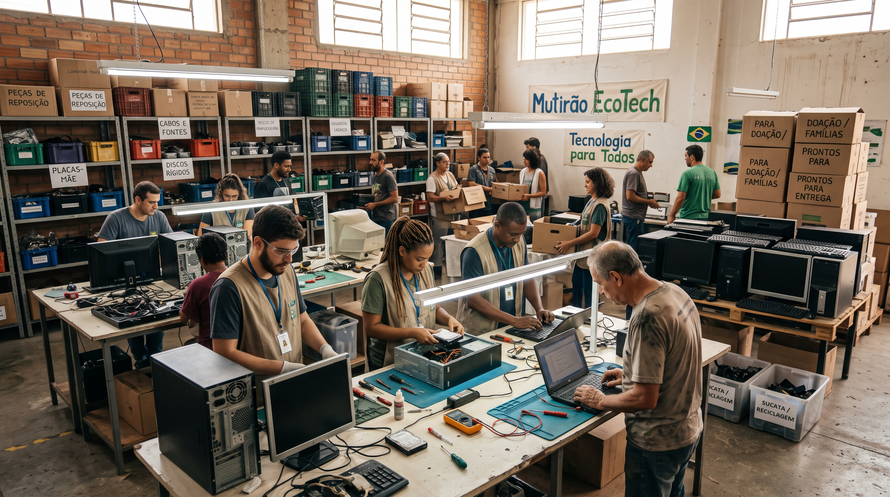

Reutilização
Conserte antes de substituir: uma nova vida para seus eletrônicos
Um reparo pode evitar o descarte prematuro, economizar recursos e manter a tecnologia útil por mais tempo.
Ler matéria
Antes de trocar um aparelho, consulte uma assistência de confiança, verifique a disponibilidade de peças e avalie se a manutenção é segura. Se o equipamento não puder ser reparado, procure um ponto de coleta que receba esse tipo de resíduo.